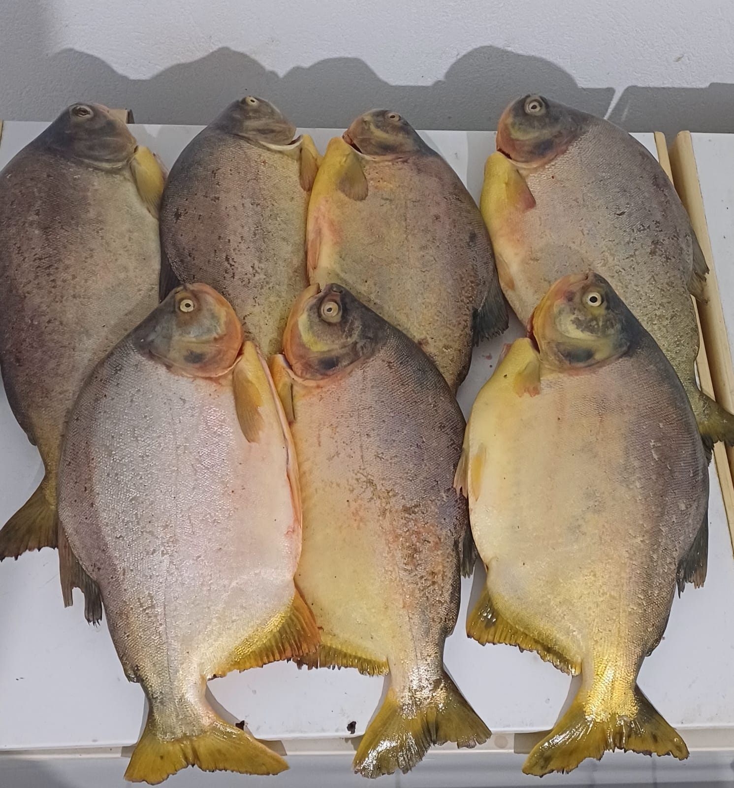
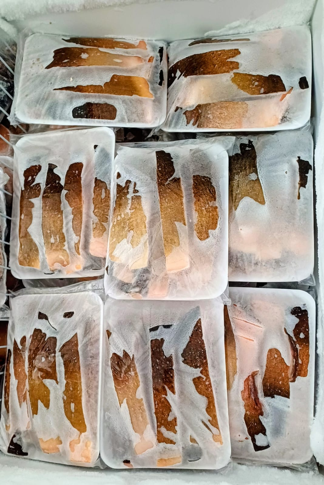

Pacu Fresco
Piaractus mesopotamicus
Escolha o Corte:
Resposta rápida pelo WhatsApp. Entregamos em Cáceres e região.
Pacu Fresco do Rio Paraguai: O Sabor da Tradição Pantaneira
O Pacu (Piaractus mesopotamicus) é, sem dúvida, o peixe mais querido do Pantanal mato-grossense. Com corpo largo, arredondado e escamas prateadas características, o Pacu vive nas águas do Rio Paraguai e seus afluentes, alimentando-se de frutos nativos que caem no rio — o que confere à sua carne um sabor levemente adocicado e inconfundível. Sua gordura natural, distribuída uniformemente entre as fibras musculares, é o grande segredo da suculência que faz do Pacu o peixe preferido das churrasqueiras e mesas de todo o Centro-Oeste brasileiro.
Os Três Cortes do Pacu: Inteiro, Retalhado e Ventrecha
Na Peixaria Rio Paraguai, o Pacu está disponível em três cortes pensados para diferentes ocasiões. O Pacu inteiro limpo — escamado e eviscerado — é ideal para assar na brasa ou no forno, apresentando-se como uma peça inteira espetacular para a mesa. O Pacu retalhado consiste em pedaços irregulares perfeitos para caldos encorpados e ensopados regionais temperados com coentro, pimentão e tomate. Já a Ventrecha é o corte retirado da barriga do peixe, a parte com maior concentração de gordura natural: quando assada na churrasqueira, derrete na boca e resulta num sabor incomparável, comparado por muitos ao da picanha bovina.
Dicas de Preparo do Pacu Fresco
O Pacu na brasa com sal grosso, alho e limão-cravo é a forma mais clássica e apreciada de preparo. Tempere o peixe com antecedência, faça cortes na pele para o tempero penetrar e asse lentamente com brasas médias. Outra opção irresistível é o Pacu na telha: disponha o peixe aberto sobre uma telha de barro coberto com rodelas de tomate, cebola, pimentão e queijo, e leve à grelha. O Pacu frito em postas, empanado em farinha de mandioca, também é clássico e perfeito como petisco. Para caldos, refogue alho e cebola em óleo quente, adicione os pedaços de pacu, tomate, pimentão e coentro, cubra com água e deixe cozinhar por 20 minutos — o resultado é um caldo encorpado, dourado e cheio de sabor que é patrimônio da culinária pantaneira.
Pacu Fresco em Cáceres: Qualidade e Procedência Garantidas
Na Peixaria Rio Paraguai, trabalhamos exclusivamente com Pacu capturado em pesca regulamentada no Rio Paraguai e em rios da bacia pantaneira, respeitando o período de piracema e os tamanhos mínimos determinados pelos órgãos ambientais de Mato Grosso. Cada peixe é selecionado pelo frescor — avaliamos odor, firmeza da carne e brilho das escamas antes de qualquer corte. Você recebe em casa um produto de qualidade real, com toda a procedência e o sabor autêntico das águas do Pantanal.